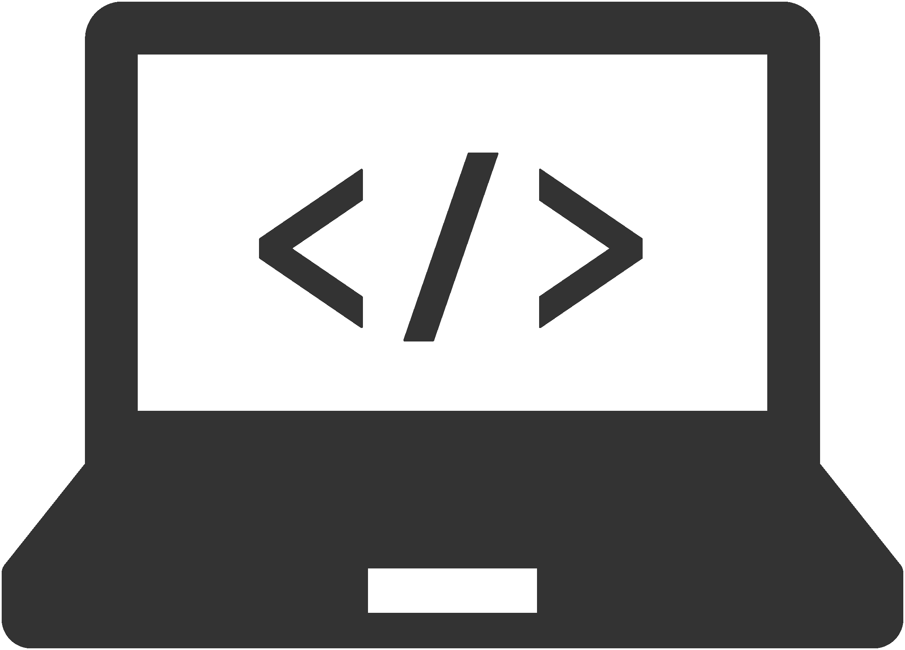

About me
「やってやれないことはねえ。」
皆川 貴政
1994年生まれ、東京都練馬区出身。
高校時代に感性で表現する面白さを知り、写真や絵を趣味で行う。
大学時代には演劇部に入り、身体での表現と劇に関わるポスターやロゴ作成を経験。
その後地方のホテルに就職し、学生時代の経験からメニューポップを作らせてもらった際に
ターゲットを据えたデザインの難しさと創意工夫していく楽しさを知る。
それを期に2019年11月からデザインの勉強を開始。
好きなものは星や花火、イルミネーションなどの光り物と写真撮影。
Vision
思わず引き込まれるような。そんなデザイン作りを目指しています。
関わっていただいた全員に幸せや感動、興味などを抱いてほしい。
それはデザインを見てもらうターゲットに限らず、クライアントや同じチームの方々にも。
デザインにはそれを実行できる力があると信じています。
ターゲットには思わず足を止め、手を止めて見てもらえるような。
クライアントには抱えている課題を解決し、その一歩先のお手伝いまでできるような。
「やってやれないことはねえ」の精神で繰り返し皆さまのためのデザインを作成し、届けていくことが私の目標です。
Strength
よりターゲットに響かせられるような、良いものを目指し続けます。
ターゲットに響くようなデザインをお届けするため、改善と確認を繰り返す力があります。
デザインのレイアウトももちろん大切ですが、普通の人は気にしない細かな点も非常に大切であると考えています。
文字やボタンの色、写真の向きや文字詰めなどの細かい点でもターゲットに与える印象は大きく変わるはずです。
その全てが美しく整えられているからこそ、普通の人が細かな点を気にしないという結果に繋がっていると考えます。
「このくらいでいいか」と妥協することなく、細部にまでこだわりを持ってブラッシュアップを繰り返しよりターゲットに響くデザインになるように、何度も何度も繰り返します。
{kind=link}
デザインスクール内課題で作成した、クレジットカードのバナーデザインです。
「さらに良くするにはどうするか」と考え続け、講師のアドバイスを元にブラッシュアップを繰り返しました。
細かく計画を建て、物事を進行します。
スムーズに物事を進めるため、事前に緻密な計画を建てています。
趣味で行っている写真撮影でも、被写体を用意して写真撮影を行う際には事前に被写体の方に聞いた欲しい雰囲気や構図といった情報を元に撮影場所や服装の提案、撮る予定の写真を絵コンテのような形で作成しておくなど当日の撮影がスムーズに進められるような計画をしてきました。
撮影当日もただ写真を撮るのみでなく被写体が緊張しないようなコミュニケーション、風による服装の乱れ、当日の天候変化など広い視野を持っておくことでスムーズに進行できるように努めました。
この経験を生かしてデザイン作成の際もターゲットの深堀りやペルソナ設定から始め、そこからターゲットやクライアントの満足のための進行方向を細かく計画しながら進めたいです。
Hobby
二度と同じものは来ない一瞬を切り取るために、写真を撮っています。
大学の頃から趣味として写真撮影を行ってきました。
主に人物、四季を感じる行事や風景をメインに撮影しています。
今見ているその景色がいつまでも見られる確証はありません。
だからこそ、その時、その場所で見ることができる一瞬を撮ることに魅力を感じています。
{kind=link}
{kind=link}
{kind=link}
一瞬を切り取るため国内様々な場所を回りました。
地方の名所のみでなく名産などの良い点も知ることができます。
skill
Coding
HTML CSS jQuery
Design
Figma XD Photoshop Illustrator
Photo
一眼レフカメラ Lightroom Photomatix